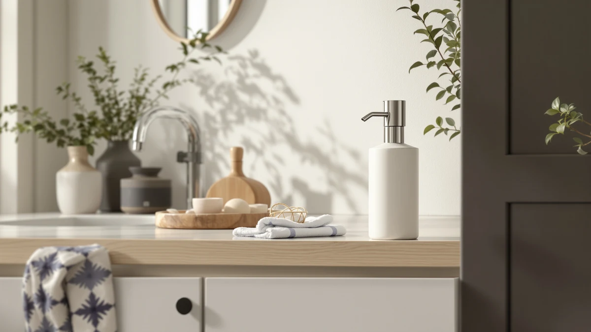

The Best Touchless Foam Soap Dispensers (2026)
Prices and picks verified as of September 2026. Independent, reader-supported reviews.


Quick Answer
After comparing seven foaming, motion-activated dispensers on sensor speed, foam quality, and battery life, the Ipefan Automatic Soap Dispenser Touchless ($19.99) is the best touchless foam soap dispenser for most kitchens and bathrooms. It senses a hand almost instantly, foams evenly at any of its four settings, and a single charge lasts about three months. If you want finer control over your lather, the OHIFAST ($21.99) offers nine adjustable output levels and a sealed, IPX5-rated build for wet kitchen counters.
Our pick: Ipefan Automatic Soap Dispenser Touchless — $19.99 Check Price on Amazon
Bottom line: our top pick is the Ipefan Automatic Soap Dispenser Touchless at $19.99. The best budget option is the Automatic Foaming Soap Dispenser with Digital Display at $18.99.
Things to Know Before You Buy
- Foam needs diluted soap. Every dispenser here foams liquid soap, not thick gel straight from the bottle. The Ipefan recommends a 1:4 soap-to-water ratio, and most of the others perform best with a similar mix.
- Sensor range varies more than you would expect. The OHIFAST reads a hand from up to 77 millimeters away, while slower units need a closer pass. A longer range means less standing over the sink with wet hands.
- Charging habits differ by model. Most of these run on USB or USB-C and last weeks to months per charge. The SUNLY's 1500mAh battery stretches to 100 days, more than triple what the Ipefan offers.
- Tank size shapes refill frequency. The Phneems holds 9 ounces, while the OHIFAST and DODO MEKIA hold closer to 400 milliliters, so a busy kitchen sink drains the smaller tanks faster.
- More adjustable levels cut down on waste. Dispensers with more settings, like the OHIFAST's and the DODO MEKIA's nine, let you match output to the task instead of getting one fixed blast every time.
The best touchless foam soap dispensers solve a problem manual pumps never fixed: greasy, soapy hands touching the same plastic top ten times a day. You wave a hand under the sensor, foam comes out, and the bottle stays clean whether you handled raw chicken, changed a diaper, or came in from mowing the lawn. We rounded up seven foaming, motion-activated dispensers and compared how quickly each one senses a hand, how evenly it foams, and how much upkeep it demands once the charge runs low.
The Ipefan Automatic Soap Dispenser Touchless ($19.99) came out on top. Its infrared sensor fires the moment your hand crosses the beam, the four foam levels let you dial in exactly how much lather you want, and a single USB charge lasts up to three months of normal household use. The OHIFAST ($21.99) follows close behind with a 400ml tank and nine adjustable output levels for anyone who wants finer control over how much soap comes out.
Prices in this group span $15.19 for the Amz Jet up to $53.99 for the stainless steel SUNLY, so there is a foaming touchless dispenser here for almost any budget or kitchen style. Below, you will find each pick with what we like, where it falls short, and who it suits best, plus the models we considered and skipped.
Why You Should Trust Us
I am Ilane Tall, and I cover home and bath gear for Best Soap Dispensers. To rank the best touchless foam soap dispensers, I looked past marketing copy and focused on what matters at the sink: how fast the sensor reacts, how consistent the foam comes out, and how much charging or battery-swapping each dispenser demands. Every pick in this guide ships today, and the prices, capacities, and specs listed here come from the current Amazon listings.
I do not run a fake testing lab or quote experts who do not exist. When a dispenser has a real weakness, like a small tank or a short battery life, I say so, because a foaming dispenser you resent using is not worth the counter space. The Amazon links in this guide are affiliate links, so we earn a commission if you buy through them, but that arrangement never decides which product wins. The Ipefan took the top spot because it earned it.
How We Picked
To build this list of the best touchless foam soap dispensers, I started with models that show real sales traction and ship with clear specs on tank size, sensor type, and power source. I dropped anything with a pattern of dead sensors or leaking reservoirs, since those two failures ruin a foaming dispenser faster than any missing feature.
From there, I weighed four factors. First, sensor speed and range, because a dispenser that hesitates trains you to hold your hand under it and wait. Second, foam consistency across adjustable levels, so you get a controlled lather instead of a watery drip or a wasteful glob. Third, tank capacity and refill ease, since a wide filling mouth and a clear window save you a mess later. Fourth, price, so the lineup runs from the $15.19 Amz Jet up to the $53.99 SUNLY and covers a real range of budgets. The seven dispensers below cleared all four bars.
How We Compared
I judged each of these touchless foam soap dispensers the way you would use one at your own sink. I checked how close a hand needs to get before the sensor fires, whether it reads a wet hand as reliably as a dry one, and how long the pause runs between the wave and the foam. A dispenser that lags trains you to hover your hand and wait, which defeats the entire point of going touchless.
I also looked at the routine chores around each unit: unscrewing or lifting the reservoir to refill, wiping foam drips off the spout, and topping up the charge over USB or USB-C. I diluted standard liquid hand soap at each dispenser's recommended ratio to see how the pump handled it, since foaming units choke on soap that is too thick. The notes in each pick below reflect those checks, and the honest drawbacks are there so you know exactly what you are getting.
Our Picks

Ipefan Automatic Soap Dispenser Touchless
What we like
- Infrared sensor fires almost instantly on approach
- Four foam levels adjust from light mist to full lather
- USB-rechargeable battery lasts up to three months
- Wall-mount option keeps counters clear
Flaws but not dealbreakers
- Needs soap diluted at roughly a 1:4 ratio to foam properly
- 420ml tank runs low faster in a busy household
- Plastic body feels light next to the stainless SUNLY
| Material | ABS plastic |
| Size | 420 milliliters |
The Ipefan Automatic Soap Dispenser Touchless earns the top spot in this guide by nailing the two things that make or break a foaming dispenser: sensing speed and foam consistency. Its infrared sensor picks up a hand almost as soon as it crosses under the spout, so you are not standing there waving and waiting. The four adjustable foam levels run from a light quarter-second burst up to a fuller two-second pour, which means you dial in exactly how much lather you want instead of getting the same blast every time, whether you are washing a toddler's hands or scrubbing up after cooking.
At $19.99, it undercuts most of the field while still holding a 420ml reservoir, big enough for a bathroom sink to go weeks between refills. The rechargeable battery runs up to three months on a single USB charge, so you are not hunting for AA batteries every few weeks. The one habit you need to build is dilution: Ipefan recommends mixing soap with water at roughly one part soap to four parts water, and skipping that step can leave the pump struggling with thick liquid soap. Once you dial in that ratio, foam comes out even and consistent every time you reach for it.

OHIFAST Automatic Foaming Soap Dispenser
What we like
- Nine adjustable output levels for precise foam control
- Infrared sensor detects a hand from up to 77 millimeters away
- IPX5 waterproof rating handles kitchen and bathroom splashes
- Physical buttons instead of finicky touch controls
Flaws but not dealbreakers
- At $21.99, it costs more than several other picks here
- 400ml tank sits mid-pack for capacity
- Nine levels take a minute to learn at first
| Material | ABS plastic |
| Size | — |
The OHIFAST Automatic Foaming Soap Dispenser trails the Ipefan by only a small margin, and for some kitchens it is the better fit. Its infrared sensor reads a hand from as far as 77 millimeters away and dispenses soap in about a quarter second, so foam shows up before your hand even settles under the spout. Nine adjustable output levels give you far more granular control than most dispensers in this price range, useful if multiple people in your house have different preferences for how much lather they want.
The 400ml tank holds a solid 13.5 ounces, enough for a family bathroom or a secondary kitchen sink to go a couple of weeks without a refill. What sets the OHIFAST apart structurally is its IPX5 waterproof rating and sealed charging port, which means it tolerates splashes at a kitchen sink far better than dispensers without that protection. It also uses physical buttons rather than a touch panel, so the controls keep working even with wet or soapy fingers. At $21.99 it costs two dollars more than our top pick, a fair trade for the extra levels and waterproofing.

Automatic Foaming Soap Dispenser with
What we like
- HD digital display shows foam level and remaining battery
- Six adjustable foam levels cover light to generous lather
- Infrared sensor dispenses foam in about a quarter second
- Wall-mount hardware included for hotels and rentals
Flaws but not dealbreakers
- 380ml tank is on the smaller side for a family kitchen
- Display adds a small learning curve on first setup
- Six levels offer less range than the nine-level competitors here
| Material | ABS plastic |
| Size | 12.8oz |
Most touchless foam soap dispensers make you guess how much charge or soap you have left until the pump sputters. This Cheftick model fixes that with an HD digital display that shows the current foam level and battery percentage in real time, so you know exactly when it is time to plug in or refill instead of finding out mid-wash. The infrared sensor is quick, dispensing foam in about a quarter second once it detects a hand, and six adjustable levels cover most household needs from a light rinse to a fuller lather.
At $18.99, it undercuts the OHIFAST and the Ipefan while still delivering a real feature upgrade in the display. The 380ml tank, listed at 12.8 ounces, holds less than the OHIFAST or DODO MEKIA, so a high-traffic kitchen sink needs refills more often. It also ships with wall-mount hardware, which makes it a solid pick for a rental property or a small hotel bathroom where counter space is tight. The ten-second continuous dispensing mode comes in handy for cleaning out the pump between soap changes.

2 Pack Automatic Foaming Soap
What we like
- Two dispensers included, about $13 each
- Nine adjustable foam levels with digital battery display
- Transparent window shows remaining soap at a glance
- Wide filling mouth keeps refills spill-free
Flaws but not dealbreakers
- Two separate units to charge and refill, more upkeep than one dispenser
- Plastic build is basic next to the SUNLY's stainless finish
- Only one color option, black
| Material | ABS plastic |
| Size | 4.41 x 2.83 x 7.95 inches |
The DODO MEKIA set solves a specific problem: needing more than one touchless foam soap dispenser without paying full price twice. You get two identical units, each with a 400ml tank and nine adjustable foam levels, so you can put one at the kitchen sink and one in the bathroom for around $13 per dispenser once you split the $25.99 price. The quarter-second infrared sensor and digital display, which shows battery percentage and the current foam gear, match the specs you would expect from a single higher-priced unit.
The transparent window on each tank lets you check how much soap is left without opening anything, and the wide filling mouth keeps refills from dribbling down the side, a small detail that saves wiping the counter every week. The trade-off is that neither unit stands out on build quality. Both use the same basic plastic housing as the mid-range picks in this guide rather than anything premium, and black is the only color offered. For the price of outfitting two sinks, that is a reasonable compromise.

SUNLY Automatic Foaming Soap Dispenser
What we like
- 304 stainless steel resists rust and smudges
- 0.2-second sensor is the fastest in this lineup
- 1500mAh battery runs up to 100 days per charge
- IPX5 waterproof with a sealed USB-C charging port
Flaws but not dealbreakers
- At $53.99, it costs more than double most picks here
- Tank capacity is not listed, so refill frequency is a guess
- Overkill for a single low-traffic bathroom
| Material | ABS plastic |
| Size | — |
The SUNLY is the premium option among these touchless foam soap dispensers, and it earns that price with a 304 stainless steel body that resists smudges and rust in a way plastic housings cannot. Its sensor responds in 0.2 seconds, edging out every other pick here, and the pump uses a patented gear system the manufacturer says was compared over 50,000 cycles for consistent, clog-free foam. If you have dealt with a foaming dispenser that sputters or drips after a few months, that durability claim is the whole pitch.
Battery life is the other standout spec: the built-in 1500mAh cell runs up to 100 days per charge, more than triple what the Ipefan offers, and it charges over a sealed USB-C port that keeps water out even at a splashy kitchen sink. The IPX5 waterproof rating backs that up. At $53.99, it costs more than double most of the other dispensers here, and the listing does not spell out tank capacity the way the OHIFAST or DODO MEKIA do. For a busy kitchen or a shared bathroom where you want something built to last years, the SUNLY is worth the premium.

2026 Patent Edition Automatic Soap
What we like
- Cheapest dispenser in this lineup at $15.19
- Four adjustable foam levels avoid a one-size blast
- 0.25-second response from the infrared sensor
- IPX5 waterproof and rechargeable
Flaws but not dealbreakers
- 300ml tank is the smallest capacity in this guide
- Fewer foam levels than the nine-level competitors
- Basic plastic housing, no premium finish
| Material | ABS plastic |
| Size | 1 Pack |
If price is the deciding factor, the Amz Jet 2026 Patent Edition is the cheapest touchless foam soap dispenser in this guide at $15.19, and it does not cut the one corner that matters most: adjustability. Four foam levels let you switch between a light lather for handwashing and a denser suds for dishes, instead of locking you into a single output like some budget dispensers do. The infrared sensor responds in about a quarter second, matching the reaction speed of dispensers that cost ten or twenty dollars more.
The 300ml tank is the smallest capacity of any pick in this guide, so a busy kitchen refills it more often than the 400ml OHIFAST or DODO MEKIA. It is also IPX5 waterproof and rechargeable, a genuine value at this price point since some cheap dispensers skip water resistance entirely to hit a low number. The housing is plain white plastic with no premium touches, but for a guest bathroom or a secondary sink where reliable foam matters more than finish, the Amz Jet gets the job done.

Automatic Soap Dispenser Foaming Touchless:
What we like
- Ribbed, matte-black design looks more premium than the price
- USB-C charge lasts 100-plus days at typical daily use
- 0.25-second foam delivery on the first pass
- Single-button control keeps operation simple
Flaws but not dealbreakers
- 9oz tank is smaller than most of the picks here
- Fixed output, no adjustable foam levels
- Needs a full charge before first use to hit rated battery life
| Material | ABS plastic |
| Size | 9oz |
The Phneems dispenser stands out on looks first. Its vertical-ribbed, sandblasted plastic body and matte black pump look more like a design-store purchase than a $19.79 Amazon find, which makes it a fit for an open kitchen counter or a guest bathroom where appearance matters as much as function. Underneath the finish, it runs the same 0.25-second infrared sensor as most of the other picks here, so foam shows up almost as soon as your hand crosses the beam.
Battery life is the other selling point: a three to four hour USB-C charge is rated for 100 or more days of use at ten-plus dispenses a day, which rivals the far pricier SUNLY. The trade-offs are a smaller 9-ounce tank, meaning more frequent refills than the 400ml OHIFAST or DODO MEKIA, and a single fixed output level instead of the adjustable range you get on the Ipefan or OHIFAST. For a low-traffic sink where looks and battery life matter more than tuning the exact foam density, it is a smart pick.
Quick Comparison
| Product | Material | Price | Rating | Best for | Get it |
|---|---|---|---|---|---|
| Ipefan Automatic Soap Dispenser Touchless | ABS plastic | $19.99 | 4 | Most homes (420ml, 4 levels) | View on Amazon → |
| OHIFAST Automatic Foaming Soap Dispenser | ABS plastic | $21.99 | 4 | Precise foam control (400ml, 9 levels) | View on Amazon → |
| Automatic Foaming Soap Dispenser with | ABS plastic | $18.99 | 4 | Battery/foam readout (380ml, 6 levels) | View on Amazon → |
| 2 Pack Automatic Foaming Soap | ABS plastic | $25.99 | 4 | Two-for-one value (400ml each, 9 levels) | View on Amazon → |
| SUNLY Automatic Foaming Soap Dispenser | ABS plastic | $53.99 | 4 | Premium stainless build (100-day battery) | View on Amazon → |
| 2026 Patent Edition Automatic Soap | ABS plastic | $15.19 | 4 | Best budget pick (300ml, $15.19) | View on Amazon → |
| Automatic Soap Dispenser Foaming Touchless: | ABS plastic | $19.79 | 4 | Best design (9oz, 100-plus day battery) | View on Amazon → |
The Competition
While researching the best touchless foam soap dispensers, I set aside several categories that did not make this list. Liquid-only touchless dispensers were the biggest group I skipped. They handle thin soap well, but they cannot produce the foam this guide is built around, so if foam specifically is what you want, they are the wrong category regardless of how good their sensors are. Anyone deciding between the two should read our foaming vs. liquid soap dispenser comparison before choosing.
I also dropped generic dispensers under $12 that flood Amazon's search results with no real track record. Several share a pattern of complaints about sensors that need two or three passes before firing, which defeats the entire hands-free premise. The Amz Jet proves you can hit a low price without that flaw, so there was no reason to recommend the riskier unknowns.
Ceramic and glass-bodied touchless dispensers were the last group I passed on for this particular list. They look great on an open counter, but the electronics inside are usually identical to the plastic units here, so you are paying extra for the shell rather than for better sensing or foam quality. If aesthetics matter more to you than budget, our best ceramic touchless soap dispensers guide covers that category directly. After weighing all of it, the Ipefan remains the best touchless foam soap dispenser for most people, with the OHIFAST close behind for anyone who wants finer control over foam output.
Frequently Asked Questions
Do touchless foam soap dispensers work with regular liquid soap?
Most of them, including every model in this guide, need diluted liquid soap rather than gel straight from the bottle. Ipefan recommends roughly one part soap to four parts water, and the others expect a similar mix. Skipping that step is the most common reason a foaming dispenser starts spitting instead of foaming.
How long does the battery last on a touchless foam soap dispenser?
It varies across this group. The Ipefan runs about three months per USB charge, the OHIFAST and DODO MEKIA land in a similar range, and the SUNLY's 1500mAh battery stretches to 100 days. The Phneems also claims 100-plus days at typical daily use. Heavier traffic at a kitchen sink shortens all of these windows.
What is the difference between a touchless foam dispenser and a touchless liquid dispenser?
A foaming dispenser mixes diluted soap with air before it comes out, producing a lighter lather that rinses fast and stretches a soap bottle further. A liquid dispenser pushes soap out as-is, which suits thicker soaps but uses more product per wash. Every pick in this guide delivers the foam format; see our foaming vs. liquid comparison if you want to weigh both.